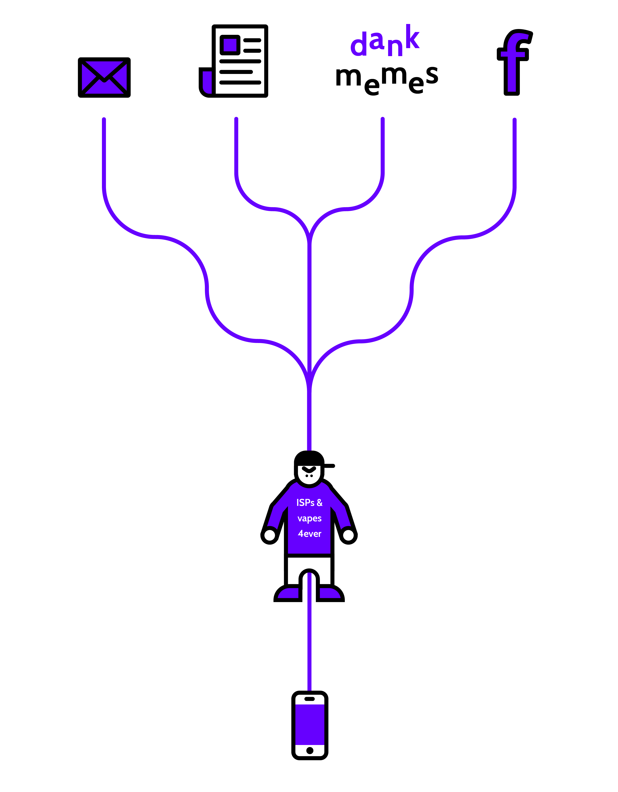
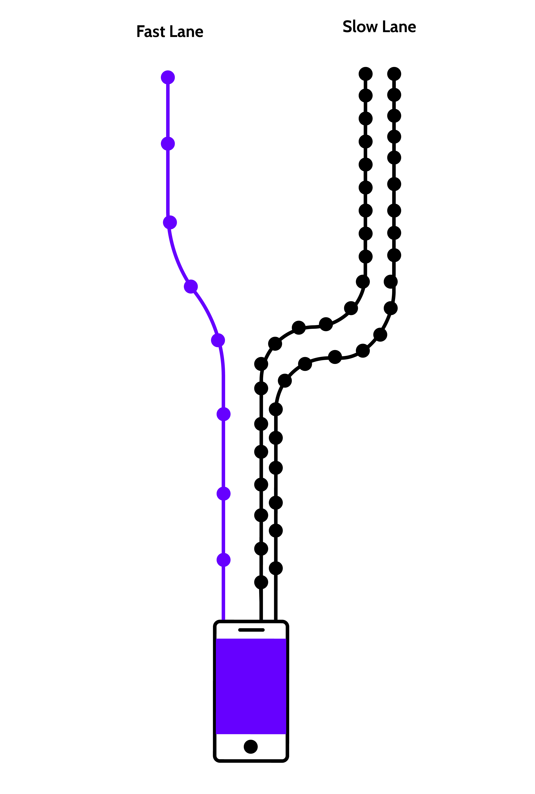
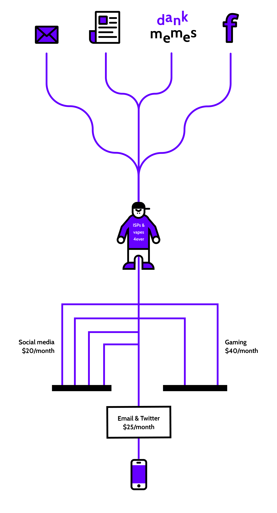
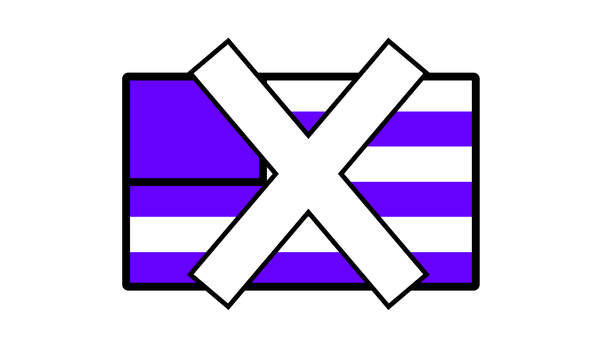
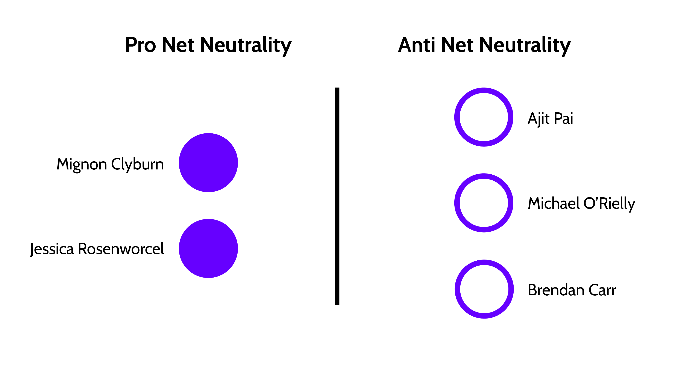
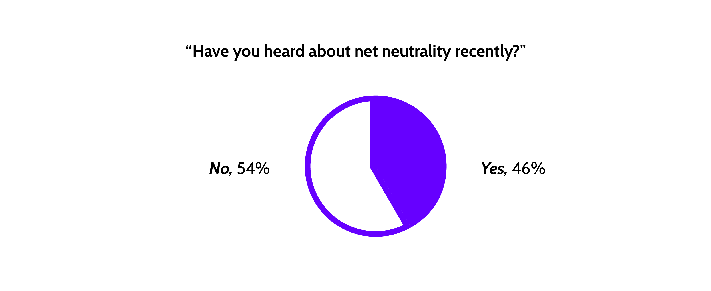
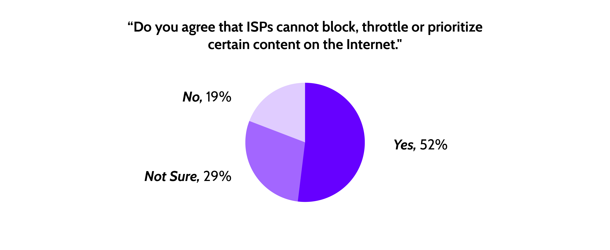
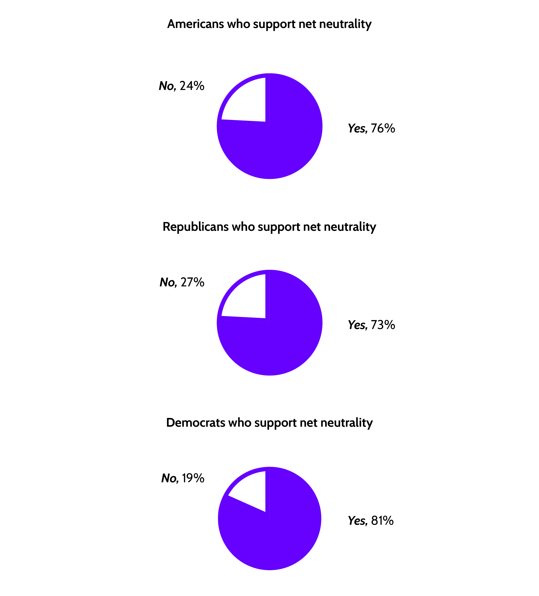

What is Net Neutrality, and why is it so important?
So you know how we use the internet to access like, oh I don't know.... fucking everything?
Even though we can all agree internet service providers (ISPs) are major assholes, we’re still forced to go through them to access content online.

Unfortunately, these same ISPs want even more power.
Currently, the way the internet works, Internet service providers (ISPs_) enable access to all content and applications regardless of the source, and without favoring or blocking particular products or websites. This is called net neutrality. This basically just means that internet providers can't favor content.
The ISPs want to abolish net neutrality because doing so will allow them to discriminate between companies by charging money for their websites to load faster.
This will result in fast and slow loading lanes for websites. The fast lanes will be reserved for larger corporations that can afford to pay for this service. Smaller sites and business will have no choice but go into the slow lane, meaning these sites will load at frustratingly slower rate.

ISPs will likely also model their internet services the way they deal with cable packages. It's very possible customers will have to purchase subscription packages based on thier internet consumption. This is going to cost you more money. It's pretty blatantly obvious that this is just a cash grab by ISPs and a corrupt government willing to play ball.

Free Speech
This also becomes an issue of free speech. If ISPs have complete control of what content reaches internet users, they can force their competition or sites they don't agree with into the slow lane. Smaller news providers will likely be unable to afford to pay to be in the fast lane, making it even harder for them to compete. Democrats and Republicans alike should be terrified about a future where the only media sources are Fox News, CNN, and MSNBC.

The bottom line is that nothing is broken, so there is nothing to "fix." This is a blatant cash grab by ISPs and corrupt poiticians.
The FCC will vote on the future of net neutrality on December 14th.
The five boardmembers of the FCC will vote on whether to repeal net neutrality very soon. At the moment, it appears that net neutraltiy will likely be repealed.
Expected Voting Result

While this will likely be the result of the vote, it is stilll possible Michael O'Rielly is on the fence. He claims he wants to ensure Pai's bill to repeal net neutrality “contains the necessary legal and analytical foundations” before he commits to approving it. However, it is worth noting that he voted to repeal net neutrality back in 2015 alongside Ajit Pai.
This isn't a partisan issue.
Although this vote will have major ramifications, less than half of the American public is aware of the issue and what's at stake.

However, for those who do are familiar with the upcoming vote, many are in agreement that net neutrality is worth preserving. 52% of registered voters support the current rules.

If you look at voters who aren't neccessarily registered, that number goes up even higher, and is suprisingly non-partisan.

Despite most Americans agreeing on this issue (which I think we can all admit is pretty damn rare), very few Republican lawmakers are publically in support of net neutrality. In fact, the only GOP member who has come out to denounce Ajit Pai's bill is Susan Collins of Maine.

This is not meant to point out the flaws of the GOP, but rather to urge Republicans voters who support net neutrality to reach out to their lawmakers and let them know where you stand. This is a great chance for both reach across the aisle to get something good done. We'll need each other if we want to get anything done.
See where your representatives stand on net neutrality.
I'm in on Net Neutrality. What can I do to help the vote?
Verizon Store Protests
At Verizon stores nationwide on December 7, one week before the vote, activists will meet at 5 p.m. local time to put pressure on Congress and demand a change. Pai used to work on Verizon’s legal team, so the choice of store is intended to “[shine] light on the corruption” and expose Pai’s conflict of interest. Events are planned across the country, including Indianapolis, New York and San Francisco, but other cities are welcome to organize their own and add it to the list. The site says the protests “will be quick, fun, and 100% legal.”
Billboards in Congressional Districts
Activist group Fight for the Future is hosting a campaign to place billboards informing voters about their representatives’ actions. The campaign will target members of Congress that voted in favor of President Donald Trump’s proposed choice of Pai as head of the FCC. This includes the four Democrats Joe Manchin, Claire McCaskill, Gary Peters and Jon Tester. The campaign is around halfway toward its $100,000 funding goal.
Washington, D.C. Protest on December 13
On December 13, the day before the vote, a team of organizers called “Defend Net Neutrality” have planned a protest from 10 a.m. to 2 p.m., with a venue as-yet undecided.
Phone Call Drive Happening Now
Citizens can call their representative by using Battle For the Net’s simple interface. Entering your phone number provides a script of what to say and connects you with your local politician. Over 250,000 calls have already been made.
Sign This Petition
TA petition entitled “Replace Ajit Pai on FCC, Restore Net Neutrality, Make Last-mile Networking a Public Utility, and Stop Corporate Abuse” has been posted on the official White House website. At time of writing, the petition still needs 82,397 rto get a response from the government.